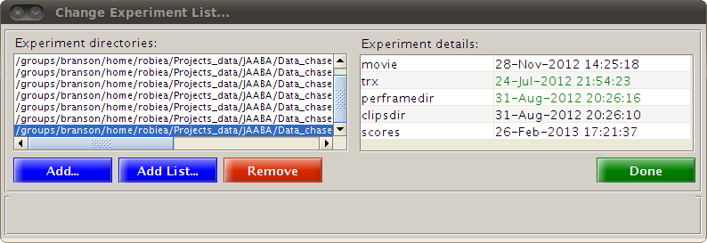
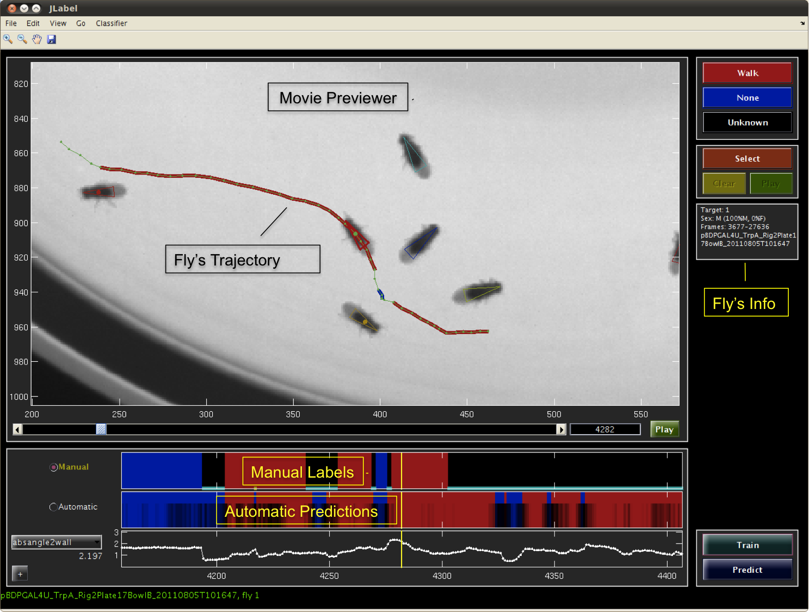
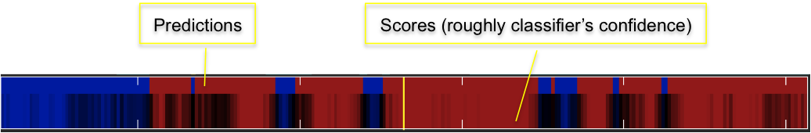
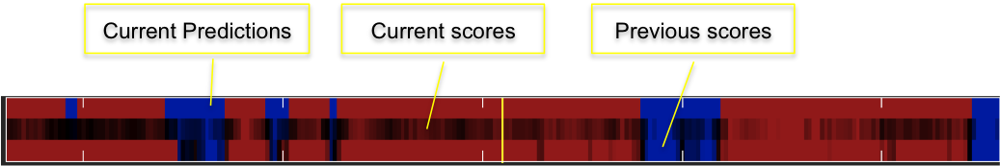

JAABA - Janelia Automatic Animal Behavior Annotator
INSTALLATION
Download the .zip file and unpack it. Let's call the directory where you unpacked as JAABA_ROOT.
STARTING UP
Start matlab and change the directory to JAABA_ROOT/Jdetect/perframe and then run StartJAABA.m script.

This will bring up a window asking you to add experiment directories. Add the example demo experiment directory JAABA_ROOT/demo. Click "Done" once the experiment is loaded and you should be set to train a walk detector.
NAVIGATION
After you've clicked "Done", the main JAABA window will appear.

To navigate forward or backward, you can use the Left or Right arrow keys to move by single frame. Up and Down arrow keys move by 30 frames. The scroll-bar below the movie previewer can also be used to move. Clicking on the timelines at the bottom of the window will move to the clicked location. Play button below the movie previewer plays the movie (what else?).
CHANGING FLIES and EXPERIMENTS
You can switch flies by double clicking on the fly. Flies can also be switched by Go -> Switch Target. If you have loaded more than one experiments you can switch experiments by Go -> Switch Experiment .
VIEWING OPTIONS
Zoom-in, Zoom-out, and pan buttons above the movie previewer behave as expected (we wouldn't have it any other way). While playing the movie, to keep fly always at the center use View -> Zoom -> Center axes on current target. View -> Zoom -> Keep target in view does not move the axes unless the fly moves outside the preview window, in which case it moves the axes to keep the fly in the view. View -> Zoom -> Static View does not move the axes even if the fly goes outside the preview window.
LABELING
To label frames as walk, click the walk button to put the pen down, and then navigate forward or backward to label a bout of walk. Once you reach the end of the bout, click on walk button again to lift up the pen. You can label none's to label trajectories that are not walk. You can use unknown button to erase labels from trajectories that you are unsure of.
TRAINING and REVIEWING
Once you have labeled few bouts, you can train a classifier by using the Train button. To see the classifier's predictions on frames without predictions, use the Predict button. If you play the movie, JAABA will predict the behavior for frames as they appear.

The automatic timeline has two parts. The top part shows the prediction for a frame while the lower part shows the classifier's score. Classifier's score can roughly corresponds to classifier's confidence. Dark colors close to black indicate low confidence, while brighter colors indicate high confidence.
RETRAINING
As you review the predictions, you can label frames that are incorrectly predicted to add these frames to the training set. It's likely that the classifier's predictions are wrong on these frames because there were no or very few such frames in the training set. And adding such frames to the training set improves the classifier's prediction on similar frames.
Once you have added new labels, you can retrain the classifier.

After retraining the automatic timeline will have 3 parts. The bottom most part shows the scores of the previous classifier to show how the classifier changed when new training examples were added.
SAVING LABELS and CLASSIFIER
The labels can be saved by using File -> Save Labels. The saved labels are automatically loaded in when the experiment is added to a new JAABA session.
Similarly, File -> Save classifier and labels will save the current classifier and labels. A saved classifier can be loaded using the Load button when starting a new JAABA session.
CLASSIFYING MOVIE
After training a classifier the whole trajectory of a fly, whole movie or all the movies can be classified by Classifier -> Classify